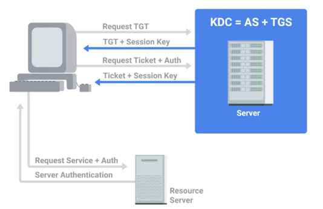
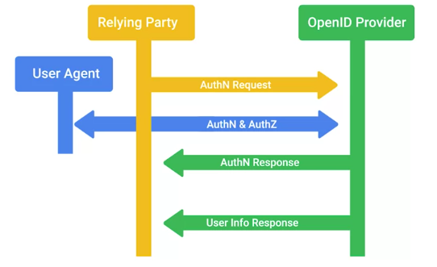

Autenticación
Mejores prácticas de autenticación
En este módulo, veremos las tres A de la seguridad, a saber:
autenticación, autorización y auditoría.
La identificación es la idea de describir una entidad de forma única. Por ejemplo, tu dirección de correo
electrónico es tu identidad al acceder a él. Pero ¿cómo haces para demostrar que eres quien dices ser? Ese es el
proceso que llamamos autenticación. Al acceder a tu correo electrónico, afirmas ser tu dirección
de correo electrónico, y proporcionas una contraseña asociada con la identidad para demostrar que eres tú, o que al
menos conoces la contraseña asociada con la cuenta de correo electrónico.
Esto es claramente diferente de la autorización, que se relaciona con los recursos a los que una identidad tiene
acceso. Estos dos conceptos se distinguen entre sí en el mundo de la seguridad con los términos "authn" para
autenticación y "authz" para autorización.
Podemos garantizar que una contraseña sea segura al hacerla más larga y compleja agregándole números, letras
mayúsculas, y caracteres especiales como los de puntuación.
Puedes pensar en la seguridad como en la mitigación de riesgos, y en lo que se refiere a mitigar riesgos, es
imposible eliminar el riesgo por completo. Lo mejor que puedes hacer es entender los riesgos que enfrentan tus
sistemas, tomar medidas para reducir esos riesgos y supervisarlos.
De regreso a nuestro ejemplo de contraseña, obviamente necesitamos encontrar algún tipo de equilibrio en el que
tengamos una contraseña razonablemente segura que también sea algo fácil de memorizar.
Bueno, en realidad deberías desconfiar de este proceso de sustitución de números, ya que es muy conocido por los
atacantes y las herramientas de descifrado de contraseñas. Como especialista en soporte de TI, asegurarte de que tu
organización use contraseñas seguras y que practique una buena higiene de contraseñas es muy importante.
Adoptar buenas políticas de contraseñas en una organización es clave para garantizar que los empleados están
protegiendo sus cuentas con contraseñas seguras. Un buen sistema de política de contraseñas haría cumplir
requisitos de longitud y complejidad de caracteres, y comprobaría la presencia de palabras del diccionario, lo que
socavaría la seguridad de las contraseñas.
Las contraseñas nunca deben escribirse o grabarse en texto sin formato, reutilizarse en diferentes cuentas o
compartirse. Reutilizar la contraseña es un riesgo porque si la contraseña es puesta en riesgo en una cuenta, otras
cuentas que usen la misma contraseña también estarían en riesgo. Compartir contraseñas también debería estar
prohibido, ya que esto socava la identidad de una cuenta porque, ahora, alguien más tiene la capacidad de acceder
como ese usuario. Junto con requerir el uso de contraseñas seguras, también se recomienda una política de rotación
de contraseñas, ya que protege contra posibles contraseñas en riesgo no detectadas. Pero es importante que el
período de rotación de contraseña no sea demasiado corto.
Autenticación multifactor
La autenticación multifactor es un sistema en el que los usuarios se autentican
mediante la presentación de múltiples piezas de información u objetos. Los diversos factores que componen un
sistema de autenticación multifactor se puede clasificar en tres tipos: algo que sabes, algo que tienes y algo
que eres. De manera ideal, un sistema multifactor incorporará al menos dos de estos factores. Algo que sabes
sería algo como una contraseña o un PIN para tu tarjeta bancaria o de cajero automático. Algo que tienes sería una
prenda física o token como tu tarjeta bancaria o de cajero automático. Algo que eres sería una pieza de datos
biométricos, como una huella digital o el escaneo del iris.
La premisa por detrás de la autenticación multifactor es que, para un atacante, resultará mucho más difícil de
robar o clonar múltiples factores de autenticación, suponiendo que se usen diferentes tipos de ellos. Aun cuando la
contraseña se vea en riesgo debido a un ataque de suplantación de identidad, el atacante también necesitaría robar
o clonar el token físico para poder acceder a la cuenta.
Los tokens físicos pueden tomar diferentes formas. Los más comunes incluyen un dispositivo USB con
un token secreto, un dispositivo independiente que genera un token o incluso una simple llave usada con una
cerradura tradicional.
Un token físico comúnmente usado genera un token de corta duración, por lo general, un número que se ingresa junto
con un nombre de usuario y contraseña. Este número toma el nombre común de contraseña por única vez (OTP), ya que
es de corta duración y tiene un valor en constante cambio. Un ejemplo de esto es el token RSA SecurID. Es un
dispositivo pequeño, alimentado por batería, con una pantalla LCD, que muestra una contraseña por única vez que se
rota periódicamente. Este es un token basado en el tiempo, lo que a veces se denomina TOTP, y funciona mediante un
valor de inicialización secreto o valor generado aleatoriamente en el token, que está registrado con el servidor de
autenticación. El valor de inicialización se usa junto con la hora actual para generar una contraseña por única
vez. Ahora, mientras el usuario tenga posesión de su token o pueda ver la pantalla del token, puede iniciar sesión.
También debería señalar que el esquema requiere que el tiempo entre el token del autenticador y el servidor de
autenticación esté relativamente sincronizado. Esto generalmente se logra por medio del Protocolo de tiempo de red
o NTP. Un atacante tendría que robar el token físico o clonarlo si puede robar el valor de inicialización secreto.
Dado que un token basado en el tiempo se sincroniza con el servidor por medio de la hora, lo que no es un secreto,
eso sería suficiente para que un atacante clonará un token.
También hay tokens basados en contador, que utilizan un valor de inicialización secreto junto con
el valor del contador secreto, que se incrementa cada vez que se genera una contraseña por única vez en el
dispositivo. El valor luego aumenta en el servidor después de la autenticación exitosa. Esto es más seguro que los
tokens basados en el tiempo por dos razones. Primero, el atacante necesitaría recuperar el valor de inicialización
y el valor del contador. En segundo lugar, el valor del contador también aumenta mientras está en uso. Por lo
tanto, un token clonado solo sería útil durante un corto período antes de que el valor del contador cambie
demasiado y el token de clonación se desincronice del token real y del servidor. Estos generadores de tokens pueden
ser dispositivos físicos especializados o pueden ser una app instalada en un teléfono inteligente con la misma
funcionalidad.
Otro método muy común para el manejo multifactor en la actualidad es la entrega de tokens de contraseña por única
vez mediante SMS. Pero esto ha sido objeto de algunas críticas debido a los ataques observados a través de este
canal. El problema que suscita la confianza en los SMS para transmitir un factor de autenticación adicional es que
dependes de los procesos de seguridad del operador de telefonía móvil. Los SMS no están encriptados ni son
privados.
Por supuesto, hay un compromiso de comodidad cuando usas un token físico. Tienes que llevar otro dispositivo para
autenticarte. Si ese dispositivo se pierde o se daña, el usuario no podrá autenticarse hasta que se reemplace el
dispositivo. Esto también requiere soporte adicional, ya que los dispositivos fallarán, se perderán, se agotarán
sus baterías y se desincronizarán con el servidor. Usar una app en un smartphone resuelve algunos de estos
problemas, pero aun así, se requiere algún tipo de soporte adicional y ocasiona incomodidad.
Estas contraseñas generadas por única vez también son susceptibles a ataques de suplantación de identidad de estilo
intermediario. A un usuario se lo puede engañar para que vaya a una página de autenticación falsa mediante un
correo electrónico de suplantación de identidad.
La otra categoría de autenticación multifactor es la biométrica, que ha ganado popularidad en los
últimos años, en especial, en los dispositivos móviles. La autenticación biométrica es el proceso que usa
características fisiológicas exclusivas de un individuo para identificarlo. Al confirmar la firma biométrica, el
individuo queda autenticado.
Un uso muy común de esto en dispositivos móviles son los escáneres de huellas digitales para desbloquear teléfonos.
Esto funciona mediante el registro de tus huellas digitales primero, para lo que se utiliza un sensor óptico que
captura imágenes del patrón único de tu huella digital. Así como las contraseñas nunca deben almacenarse en texto
sin formato, tampoco debe hacerse con los datos biométricos utilizados para la autenticación, por lo tanto, del
mismo modo, nunca se los almacenará directamente.
A diferencia de las contraseñas, los datos biométricos son inherentes a una persona. Por lo tanto, existen
implicaciones de privacidad en caso de robo o fugas de datos biométricos. Las características biométricas también
pueden ser dificilísimas de cambiar en caso de que se vean en riesgo, a diferencia de las contraseñas. Entonces, en
lugar de almacenar directamente los datos de las huellas digitales, los datos pasan a través de un algoritmo de
hash y se almacena el hash único resultante.
Una ventaja de la autenticación biométrica sobre los sistemas basados en tokens o en el conocimiento es que es más
confiable con el objeto de identificar a un individuo para la autenticación, ya que las características
biométricas, por lo general, no se comparten.
Otros sistemas biométricos usan cosas como escaneos del iris, reconocimiento facial, detección en puertas, incluso
voz. Microsoft desarrolló el sistema de autenticación biométrica para Windows 10, llamado Windows Hello, que admite
la identificación de huellas digitales, identificación del iris y reconocimiento facial. Usa dos cámaras, una para
color y otra para infrarrojo, lo que permite la detección de profundidad. De esta manera, no es posible engañar al
sistema mediante una copia impresa de la cara de un usuario autorizado.
Una evolución de los tokens físicos es U2F o Universal Second Factor. Es un
estándar desarrollado conjuntamente por Google, Yubico y NXP Semiconductors. El estándar finalizado para U2F está
siendo alojado por la Alianza FIDO. U2F incorpora un mecanismo de desafío-respuesta, junto con criptografía de
clave pública, para implementar una solución de autenticación de segundo factor más segura y cómoda. A los tokens
U2F se los denomina llaves de seguridad y una amplia gama de fabricantes los ponen a disposición.
Las llaves de seguridad son, básicamente, pequeños cripto procesadores con almacenamiento seguro de claves
asimétricas y ranuras adicionales para ejecutar código incrustado.
El primer paso es el registro, ya que la llave de seguridad debe estar registrada en un sitio o servicio. En el
momento del registro, la llave de seguridad. genera un par de claves público-privadas únicas para ese sitio y envía
la clave pública al sitio para su registro. También vincula la identidad del sitio con el par de claves. Hay pares
de claves únicos para cada sitio por razones de privacidad. Si un sitio se ve en riesgo, esto impide las
referencias cruzadas de las claves públicas registradas y la detección de puntos en común entre sitios basada en
datos de registro. Una vez registrado en el sitio, la próxima vez que te soliciten que autentiques, se te pedirá tu
nombre de usuario y contraseña como de costumbre. Pero luego, se te pedirá que toques tu llave de seguridad. Cuando
tocas físicamente la llave de seguridad, eso constituye una pequeña comprobación de la presencia del usuario para
garantizar que el malware no pueda autenticarse en su nombre, sin su conocimiento. Este toque desbloqueará las
claves privadas almacenadas en la llave de seguridad, las que se usan para autenticar.
La autenticación ocurre como un proceso de desafío-respuesta que protege contra los ataques por repetición. Esto se
debe a que un intruso no puede volver a usar la sesión de autenticación más tarde porque el desafío y la respuesta
resultante serán diferentes en cada sesión de autenticación. Lo que sucede es que el sitio genera un desafío, en
esencia, algunos datos aleatorios, y lo envía al cliente que está intentando autenticarse. El cliente seleccionará
la clave privada que coincida con el sitio y usará esta llave para firmar el desafío y enviar los datos firmados.
El sitio ahora puede verificar la firma usando la clave pública que se registró anteriormente. Si la firma
concuerda, el usuario se autentica.
Desde una perspectiva de seguridad, este es un diseño mucho más seguro que las OTP. Esto se debe a que el flujo de
autenticación está protegido contra ataques de suplantación de identidad debido a la naturaleza interactiva del
proceso. Si bien U2F no protege directamente contra ataques de intermediario, la autenticación debe llevarse a cabo
a través de una conexión TLS segura, lo que proporcionaría protección contra este tipo de ataque. Las llaves de
seguridad también son resistentes a la clonación o falsificación, porque tienen secretos exclusivos incrustados en
ellas y están protegidas contra manipulaciones. Desde la perspectiva de la comodidad, este es un flujo de
autenticación mucho mejor en comparación con las OTP, ya que el usuario no tiene que transcribir manualmente una
cadena de números en el cuadro de diálogo de autenticación. Todo lo que tiene que hacer es tocar su clave de
seguridad.
Certificados
Como aprendimos anteriormente, los certificados son claves públicas que están
firmadas por una autoridad de certificación, o CA, como signo de confianza. Ya vimos los certificados de servidor
TLS, pero también puede haber certificados de cliente. Estos funcionan de manera muy similar a los certificados de
servidor, pero son presentados por los clientes y permiten a los servidores autenticar y verificar clientes.
Para emitir certificados de cliente, una organización debe establecer y mantener una infraestructura de CA para
emitir y firmar certificados. Parte de la autenticación de certificados también implica que el cliente autentique
el servidor, lo que nos brinda autenticación mutua. Esto es positivo, ya que el cliente puede verificar que se está
comunicando con el servidor de autenticación y no con un imitador. En este caso, todos los clientes que están
usando autenticación por certificados también deberían tener el certificado de la CA en su tienda de certificados
de confianza. Esto establece la confianza con la CA y permite al cliente verificar que está comunicándose con el
servidor verdadero cuando intentar autenticarse.
También se debe verificar la fecha de expiración de un certificado de autenticación, aunque los certificados tienen
dos fechas que se deben verificar: "No válido antes de" y "No válido después de". "No válido antes de" se verifica
para ver si el certificado es válido aún, ya que es posible que se emitan certificados para uso futuro. "No válido
después de" es una fecha de caducidad directa, después de la cual el certificado ya no es válido. De manera
similar, se verificará el certificado comparándolo con una lista de revocaciones, o CRL. Esta es una lista firmada,
publicada por la CA, que define certificados que han sido revocados explícitamente.
Un último paso que se realiza como parte del proceso de verificación del servidor de autenticación es demostrar la
posesión de la clave privada correspondiente, ya que el certificado es una clave pública firmada. Si no demostramos
la posesión, no hay nada que impida que un atacante copie el certificado, ya que no se lo considera secreto, y
pretenda ser su propietario. Para evitar esto, se verifica la posesión de la clave privada a través de un mecanismo
de desafío y respuesta. Aquí es donde el servidor solicita un bit aleatorizado de datos que se firmará por medio de
la clave privada que corresponde a la clave pública presentada para la autenticación.
LDAP
LDAP, o Protocolo ligero de acceso a directorios, es un protocolo de estándar abierto
del sector para acceder y hacer mantenimiento de servicios de directorio. Cuando decimos servicios de directorio,
nos referimos a algo similar a un directorio telefónico o de correo electrónico. Se lo usa más comúnmente como
backend para autenticación de cuentas.
La especificación LDAP describe la estructura de datos del propio directorio y define funciones para interactuar
con el servicio, como realizar búsquedas y modificar datos. Puedes imaginar un directorio como una base de datos,
pero con más detalles o atributos que describen a las entidades que se encuentran en la base de datos.
La estructura de un directorio LDAP tiene una especie de diseño de árbol y está optimizada para la recuperación de
datos más que para su escritura. Piensa que es similar a una guía telefónica que se usa con más frecuencia para
buscar datos que para hacerles modificaciones. Los directorios se pueden alojar en muchos servidores LDAP
diferentes para facilitar búsquedas más rápidas, y se mantienen sincronizados a través de la replicación del
directorio.
Al igual que en una libreta de direcciones, una entrada para un usuario particular contendrá información
perteneciente a esa cuenta de usuario, como su nombre y apellido, número de teléfono, ubicación del escritorio,
dirección de correo electrónico, shell de acceso y otros datos similares. Junto con los atributos de objeto, la
ubicación de una entrada en la estructura general de datos representará información relacionada con los objetos
como relaciones entre objetos.
Como LDAP usa una estructura de árbol llamada árbol de información de datos, los objetos tendrán un elemento
principal y uno o más elementos secundarios que le pertenecen. También puedes pensar en esto como un sistema de
archivos con un sistema de archivos raíz en las carpetas subsiguientes. La carpeta a la que pertenece un objeto
proporcionará información sobre ese objeto debido a su relación con el objeto principal. En lenguaje LDAP, a estas
carpetas las llamamos unidades organizativas (OU). Nos permiten agrupar objetos relacionados en unidades como
personas o grupos para distinguir entre cuentas de usuario individuales y grupos a los que pueden pertenecer las
cuentas. Esta estructura de árbol también permite la herencia y anidación de objetos, en la que los atributos o
propiedades de un objeto principal puede ser heredados por los objetos secundarios en niveles inferiores del
árbol.
Ahora, ya que es posible que las entradas del directorio compartan atributos, debe haber un identificador único
para cada entrada. A esto lo llamamos nombre distinguido, o DN. Volviendo a nuestra analogía del sistema de
archivos, puedes pensar en un DN como una ruta completa hacia un archivo en lugar de un nombre de archivo. Esto es
porque puedes tener múltiples archivos con el mismo nombre de archivo en un sistema de archivos. Pero la ruta
completa hacia el archivo describiría un archivo único.
Algunas de las operaciones más comunes que un cliente puede invocar para interactuar con un servidor LDAP son Bind,
que es cómo los clientes se autentican en el servidor; StartTLS, que permite a un cliente comunicarse por medio de
LDAP v3 sobre TLS; Search, para realizar búsquedas y recuperación de registros; Add/delete/modify, que son diversas
operaciones para escribir datos en el directorio, y Unbind, que cierra la conexión al servidor LDAP. Hay muchas
implementaciones de servidores LDAP, como Active Directory de Microsoft y OpenLDAP para implementaciones de código
abierto.
RADIUS
RADIUS, o servicio de usuario de acceso telefónico de autenticación remota, es un protocolo que
proporciona servicios AAA para usuarios en una red. Es un protocolo de uso muy común para administrar el acceso a
redes internas, redes Wi-Fi, servicios de correo electrónico y servicios de VPN.
Diseñado originalmente para transportar información de autenticación para usuarios de acceso telefónico remoto,
evolucionó para transportar una amplia variedad de protocolos de autenticación estándar como EAP, o Protocolo de
autenticación extensible.
Los clientes que desean autenticarse en un servidor RADIUS no interactúan directamente con él. En cambio, cuando un
cliente quiera acceder a un recurso que está protegido, presentará las credenciales de autenticación a un NAS, o
servidor de acceso a la red, que transmitirá las credenciales al servidor RADIUS. Entonces, el servidor RADIUS
verificará las credenciales mediante un esquema de autenticación configurado. Los servidores RADIUS pueden
verificar la información de autenticación del usuario almacenada en un archivo sin formato o se pueden conectar a
fuentes externas como bases de datos SQL, LDAP, Kerberos o Active Directory. Una vez que el servidor RADIUS evaluó
la solicitud de autenticación del usuario, responde con uno de tres mensajes: acceso rechazado, desafío de acceso o
acceso aceptado.
Kerberos
Kerberos es un protocolo de autenticación de red que utiliza tickets para permitir que las
entidades demuestren su identidad por canales potencialmente inseguros para proporcionar autenticación mutua.
También usa encriptación simétrica para proteger contra la intercepción de los mensajes del protocolo y de los
ataques por repetición.ç
Kerberos fue desarrollado originalmente en el Instituto de Tecnología de Massachusetts (MIT), en los EE. UU. y se
publicó en la década de 1980 como versión 4. Años después, en 1993, se publicó la versión 5. Hoy Kerberos admite
cifrado AES y además implementa sumas de comprobación para garantizar la integridad y confidencialidad de los
datos. Cuando se une a un dominio de Windows, Windows 2000 y las versiones más nuevas usarán Kerberos como
protocolo de autenticación predeterminado. Microsoft también implementó su propio servicio Kerberos con algunas
modificaciones al protocolo abierto, como la incorporación del cifrado de flujo RC 4.
Anteriormente mencionamos los tickets, que son una especie de token que demuestran tu identidad. Se pueden usar
para autenticar ante servicios protegidos por medio de Kerberos o, en otras palabras, dentro del ámbito de
Kerberos. Los tickets de autenticación permiten a los usuarios autenticarse en servicios sin necesidad de
autenticación por nombre de usuario/contraseña para cada servicio individual. Un ticket expirará después de cierto
tiempo, pero tiene disposiciones para su renovación automática transparente.

Primero, un usuario que quiera autenticarse ingresa su nombre de usuario y contraseña en su máquina cliente. Su
software de cliente Kerberos, entonces, tomará la contraseña y generará una clave de encriptación simétrica a
partir de ella. A continuación, el cliente envía un mensaje de texto sin formato al AS, o servidor de
autenticación, de Kerberos, que incluye el ID del usuario que se autentica. La contraseña o la clave secreta
derivada de la contraseña no se transmiten.
El AS usa el ID de usuario para verificar si hay una cuenta en la base de datos de autenticación, como un servidor
de Active Directory. Si es así, el AS generará la clave secreta usando el hash de la contraseña almacenado en el
servidor del centro de distribución de claves. El AS usará la clave secreta para cifrar y enviar un mensaje que
contiene la clave de sesión TGS del cliente. Este es un uso de clave secreta para encriptar las comunicaciones con
el servicio de otorgamiento de tickets, o TGS, que ya es conocido por el servidor de autenticación.
El AS también envía un segundo mensaje con un ticket de otorgamiento de tickets, o TGT, que se encripta usando la
clave secreta del TGS. El TGT tiene información como la identificación del cliente, el período de validez del
ticket, y la clave de sesión de servicio de otorgamiento y aceptación de tickets. El primer mensaje puede
desencriptarse con la clave secreta compartida obtenida a partir de la contraseña del usuario. Luego proporciona la
clave secreta que puede desencriptar el segundo mensaje, lo que le otorga al cliente un TGT válido.
Ahora, el cliente tiene suficiente información para autenticarse con el servidor de otorgamiento de tickets. Dado
que el cliente se autenticó y recibió un TGT válido, puede usar este TGT para solicitar acceso a servicios desde
adentro del ámbito de Kerberos. Esto se hace enviando un mensaje al servicio de otorgamiento de tickets con el TGT
encriptado que se recibió del AS anteriormente, junto con el nombre o la ID del servicio a la que el cliente
solicita acceso. El cliente también envía un mensaje que contiene un autenticador que incluye la ID de cliente y
una marca de tiempo que está encriptada con la clave de sesión de TGT del AS. El servicio de otorgamiento de
tickets desencripta el TGT usando su propia clave secreta, que le proporciona al servicio de otorgamiento de
tickets la clave de sesión del servicio de otorgamiento de tickets del cliente.
A continuación, usa la clave para desencriptar el mensaje del autenticador. Luego, comprueba la ID de cliente de
estos dos mensajes para asegurarse de que coincidan. Si lo hacen, envía dos mensajes al cliente. El primero
contiene el ticket del cliente al servidor, que contiene la ID de cliente, la dirección del cliente, el período de
validez, y la clave de sesión cliente-servidor encriptada por medio de la clave secreta del servicio. El segundo
mensaje contiene la clave de sesión cliente-servidor en sí y se encripta usando la clave de sesión del servicio de
otorgamiento de tickets del cliente.
Finalmente, el cliente tiene suficiente información para autenticarse en el servidor de servicio, o SS. El cliente
envía dos mensajes al SS. El primer mensaje es el ticket encriptado del cliente al servidor que se recibió desde el
servicio de otorgamiento de tickets. El segundo es un nuevo autenticador con la ID del cliente y la marca de tiempo
encriptada por medio de la clave de sesión cliente-servidor. El SS desencripta el primer mensaje usando su clave
secreta, lo que le proporciona la clave de sesión cliente-servidor. La clave luego se utiliza para desencriptar el
segundo mensaje, y este compara la ID de cliente en el autenticador con la que está incluida en ticket del cliente
al servidor. Si estas ID coinciden, entonces el SS envía un mensaje que contiene la marca de tiempo del
autenticador suministrado por el cliente, encriptada por medio de la clave de sesión cliente-servidor.
El cliente, a continuación, desencripta este mensaje y verifica que la marca de tiempo sea correcta y autentica el
servidor. Si todo esto sucede correctamente, entonces el servidor otorga acceso al servicio solicitado del lado del
cliente.
Kerberos ha recibido algunas críticas porque es un servicio monolítico único. Esto crea un peligro de punto único
de falla. Si el servicio Kerberos se cae, los nuevos usuarios no podrán autenticarse ni iniciar sesión. Aparte de
los problemas de disponibilidad, si el servidor central de Kerberos se ve en riesgo, el atacante podría hacerse
pasar por cualquier usuario mediante la generación de tickets Kerberos válidos para su cuenta de usuario.
Kerberos impone estrictos requisitos de tiempo que requieren que los relojes del cliente y el servidor tengan una
sincronización muy ajustada, de lo contrario, la autenticación fallará. Esto se logra, en general, mediante el uso
de NTP para mantener ambas partes sincronizadas usando un servidor NTP. El modelo de confianza de Kerberos también
es problemático, ya que requiere que clientes y servicios tengan una confianza establecida en el servidor Kerberos
para autenticarse usando Kerberos. Esto significa que no es posible que los usuarios se autentiquen con Kerberos a
partir de clientes desconocidos o no confiables. por lo tanto, cosas como BYOD o "Traiga su propio dispositivo" y
la computación en la nube son incompatibles, o, al menos, muy difícil de implementar de forma segura con la
autenticación Kerberos.
TACACS+
TACACS+, se pronuncia "TACACS plus", significa "sistema de control de acceso del controlador de
acceso a terminales - Plus". Es un protocolo AAA desarrollado por Cisco que se lanzó como estándar abierto en 1993.
Reemplazó el antiguo protocolo TACACS desarrollado en 1984 para MILNET, la red no clasificada para DARPA que más
tarde se convirtió en NIPRNet. TACACS+ también tomó el lugar de XTACACS, o TACACS extendido, que era una extensión
de TACACS patentada por Cisco.
TACACS+ se usa principalmente para administración, autenticación, autorización y auditoría de dispositivos, a
diferencia de RADIUS, que se usa principalmente para acceso a la red AAA. Es importante destacar estas diferencias
en las características de lo que brindan estos servicios, aunque las diferencias se relacionan principalmente con
las partes de autorización y auditoría más que con la autenticación.
TACACS+ se usa principalmente como sistema de autenticación para dispositivos de infraestructura de red, los que
tienden a ser objetivos de alto valor para los atacantes. Esto puede ser un argumento a favor de su implementación
a medida que tu organización crezca.
Inicio de sesión único
El inicio de sesión único, o SSO, es un concepto de autenticación que permite que
los usuarios se autentiquen una sola vez para obtener acceso a una gran cantidad de servicios y aplicaciones
diferentes. Como no es necesario volver a autenticarse para cada servicio, los usuarios no necesitan muchos
conjuntos de nombres de usuario y contraseña para una combinación de aplicaciones y servicios.
SSO se realiza mediante autenticación ante un servidor de autenticación central, como un servidor LDAP. Esto, a su
vez, proporciona una cookie o token que se puede usar para obtener acceso a las aplicaciones configuradas para usar
SSO. Kerberos es en realidad un buen ejemplo de un servicio de autenticación SSO. El usuario se autenticaría ante
el servicio Kerberos una vez, lo que luego le concedería un ticket de otorgamiento de ticket que se puede presentar
ante el sistema de otorgamiento de tickets en lugar de las credenciales tradicionales. Así, el usuario puede
ingresar las credenciales una vez y obtener acceso a una variedad de servicios.
Permite a los usuarios tener un conjunto de credenciales que otorgan acceso a muchos servicios, lo que hace menos
probable que las contraseñas se escriban o almacenen de forma poco segura. Esto también debería reducir la
sobrecarga sobre el servicio de asistencia para contraseñas y elimina el tiempo dedicado a volver a autenticarse a
lo largo de la jornada laboral.
Un atacante que logra poner en riesgo una cuenta tiene mucho más nivel de acceso en un esquema de SSO. Las
credenciales de usuario otorgarán acceso a todas las aplicaciones y servicios a los que se les permite acceder a
esa cuenta. Por lo tanto, tenemos un gran motivo para usar la autenticación multifactor junto con un esquema
SSO.
Pero esto abre un nuevo canal de ataque: el robo de cookies o tokens de sesión de SSO. En lugar de apuntar a las
credenciales directamente, los atacantes pueden intentar robar los tokens de SSO, lo que permitirá un amplio
acceso, aunque sea por un corto tiempo. El robo de estos tokens también permite que un atacante esquive las
protecciones de autenticación multifactor, ya que el token de sesión permite el acceso sin necesidad de
autenticación completa hasta caducar.
Un ejemplo de un sistema SSO es OpenID, un sistema de autenticación descentralizado. Es un estándar abierto que
permite a los sitios participantes, conocidos como usuarios de confianza, dar lugar a la autenticación de usuarios
mediante un servicio de autenticación externo. Esto permite que los sitios autoricen la autenticación sin necesidad
de que el propio sitio tenga infraestructura de autenticación, la que puede ser difícil de implementar y mantener.
También permite a los usuarios acceder al sitio sin tener que crear una nueva cuenta, lo que simplifica la gestión
de acceso en una amplia variedad de sitios. En su lugar, un usuario solo necesita tener una cuenta con un proveedor
de identidad.
Para solicitar autenticación, primero, un usuario de confianza busca al proveedor de OpenID, luego establece un
secreto compartido con el proveedor si no existe uno. El secreto compartido se usará para validar los mensajes del
proveedor de OpenID. Luego, el usuario será redirigido o se le pedirá que autentique en una nueva ventana a través
del flujo de acceso del proveedor de identidades. Una vez autenticado, al usuario se le pedirá que confirme si
confía o no en el usuario de confianza. Tras su confirmación, las credenciales se transmiten al usuario de
confianza, por lo general en la forma de un token, no de credenciales de usuario reales, lo que indica que el
usuario ahora está autenticado ante el servicio.

 Índice
Índice